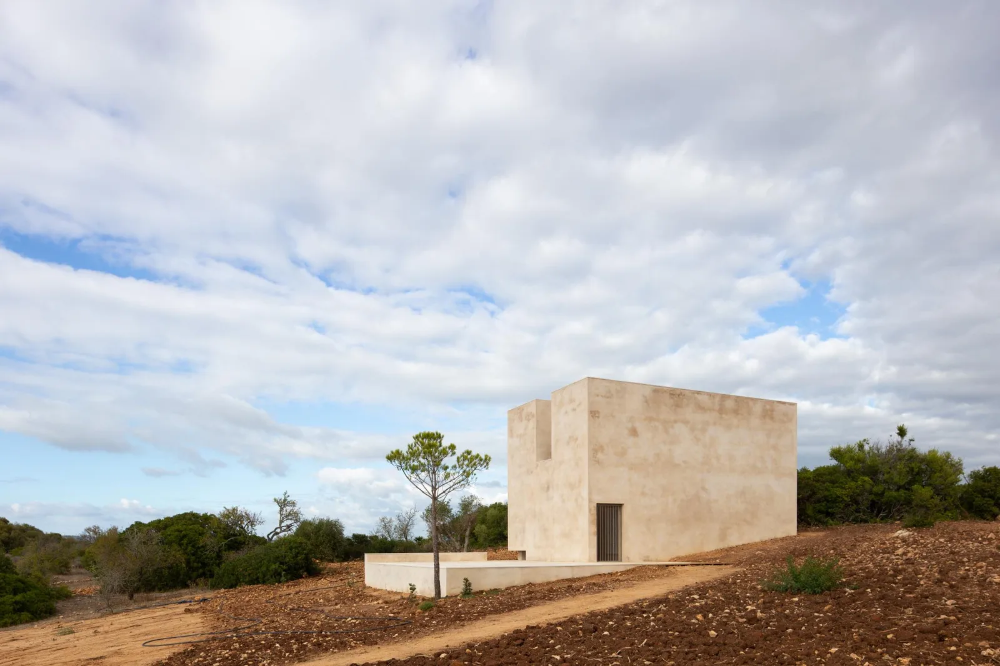
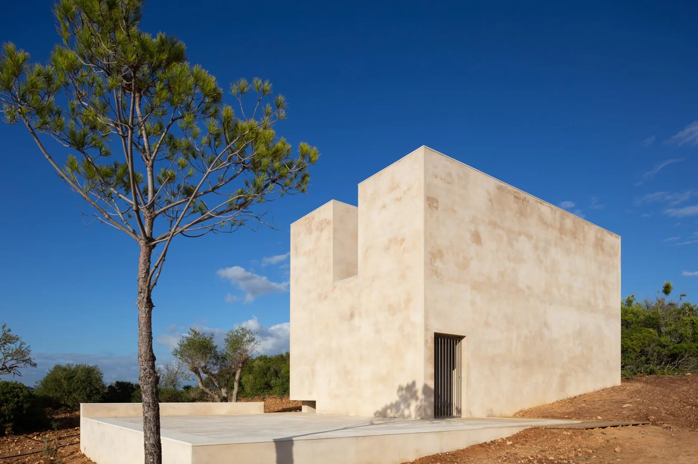
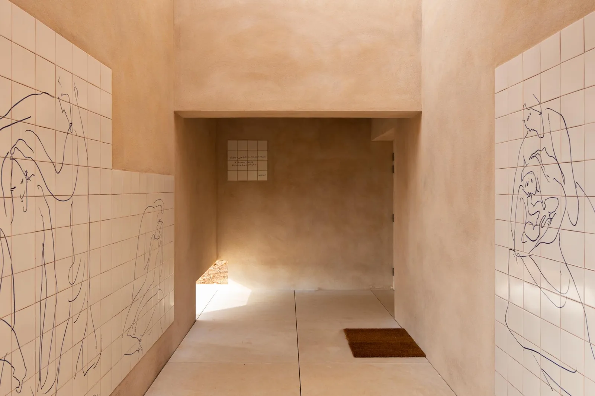
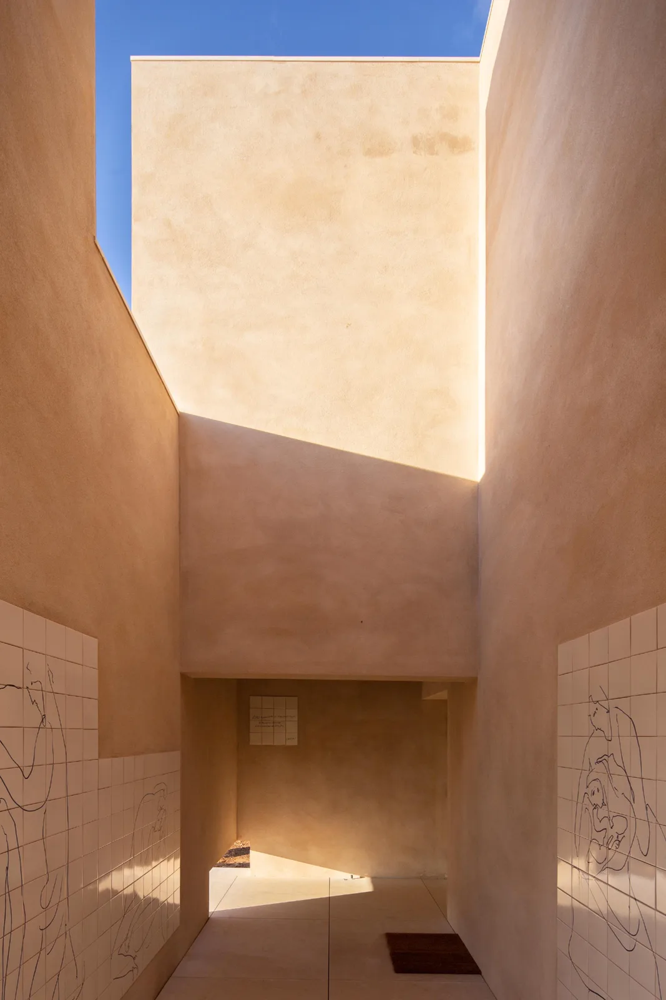

Chapel · 2018
Capela do Monte
Álvaro Siza Vieira
Barão de São João, Portugal
This non-denominational Christian chapel is a place for prayer and contemplation. The walk uphill and the entrance courtyard establish a gradual approach to an intimate room, away from the surrounding settlement.
The chapel operates without electricity, heating or running water. Its insulated brick construction, natural ventilation and restrained openings support comfort through the building fabric. Siza also designed the furniture and drawings translated into hand-painted tiles, extending the architecture to its smallest elements.


Relevant connections
Images and drawings / 04





